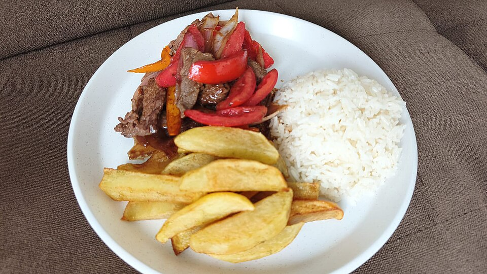

Recetas
Pide ayuda a una persona adulta si vas a usar cuchillos,
fuego o aceite caliente.
Lomo saltado
35 minutos · 2 porciones

Ingredientes
- 300 g de carne de res en tiras.
- 1 cebolla roja y 2 tomates en gajos.
- 2 papas cortadas en bastones.
- 2 cucharadas de sillao y 1 cucharada de vinagre.
- 2 porciones de arroz blanco cocido.
- Aceite, sal y pimienta al gusto.
Preparación
- Lava los vegetales y prepara los ingredientes.
- Fríe las papas hasta que estén doradas y resérvalas.
- Saltea la carne hasta que esté bien cocida. Agrega la cebolla y el tomate.
- Añade el sillao y el vinagre. Sazona y sirve con las papas y el arroz.
Causa limeña
40 minutos más el enfriado · 4 porciones

Ingredientes
- 800 g de papa amarilla.
- 250 g de pollo cocido y deshilachado.
- 1 palta en láminas.
- 3 cucharadas de mayonesa.
- 2 cucharadas de pasta de ají amarillo.
- Jugo de 2 limones, 2 cucharadas de aceite y sal al gusto.
Preparación
- Hierve las papas, pélalas y prénsalas mientras estén tibias.
- Mezcla la papa con el ají, el limón, el aceite y la sal. Deja enfriar.
- Combina el pollo cocido con la mayonesa.
- Arma una capa de papa, agrega el pollo y la palta, y cubre con más papa.
- Mantén la causa refrigerada hasta servir.
Ahora te toca a ti
Elige uno de estos platos para agregarlo al recetario.
- Ají de gallina
- Arroz chaufa
Escribe el nombre, agrega la foto de la carpeta starter-files
y crea una lista de ingredientes y otra con los pasos.